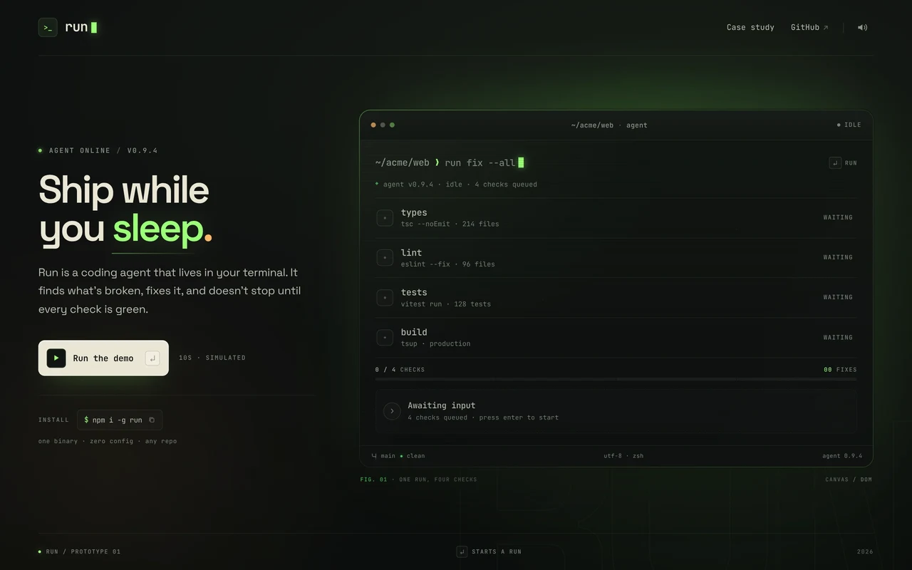
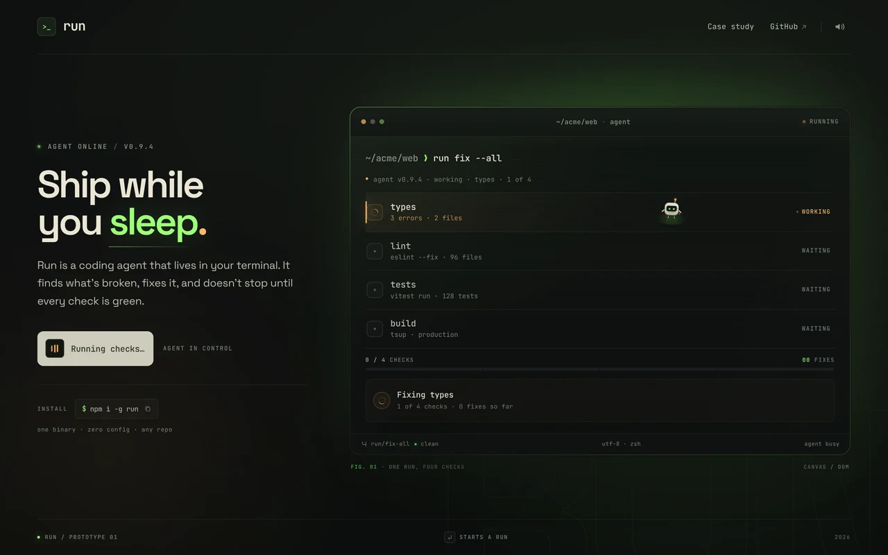
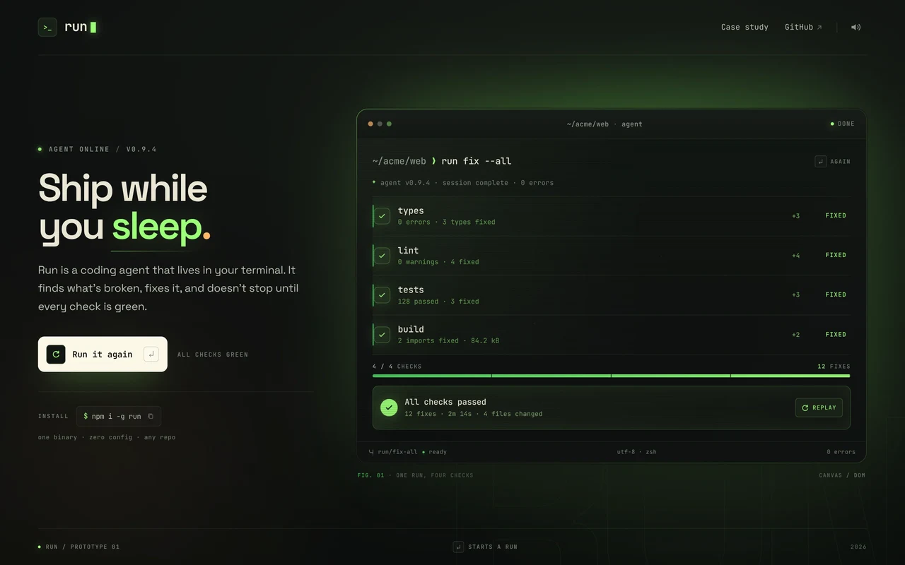
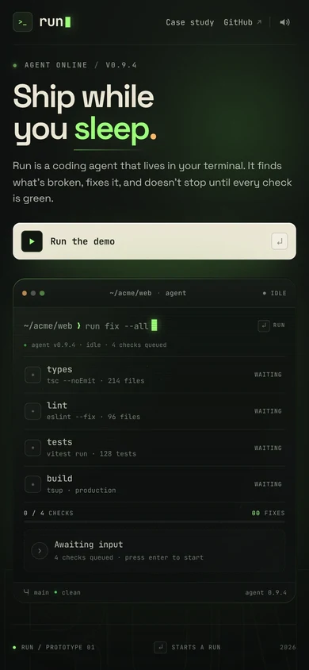

Run / Case study
The terminal
is the pitch.
Run is a one-screen landing page for a terminal agent. The demo is not a hero image or a feature grid. It is a run: four checks move from waiting to working to fixed, while a small canvas of robots makes the waiting visible. Press one key and the product explains itself.
- Role
- Product design and frontend
- Stack
- TypeScript, Vite, Canvas 2D
- Sound
- Web Audio, no files
- Status
- Prototype, November 2026

The problem
Most agent pages describe the work. They never show it.
A terminal agent makes a promise about sequence: it looks, changes, checks, and reports. A hero image flattens that promise into a still. A feature grid turns it into adjectives.
Run is a landing page for that kind of agent. The usual page was not going to work. The product is not a dashboard, a chat bubble, or a board of cards. It is a run: a command, four checks, a set of fixes, and a receipt.
So the page had to answer one question before it asked for an install: what does it feel like to watch this thing work?
- A terminal screenshot. It shows the place, not the work. Every row is frozen in one state.
- A code block. It shows the command, not the consequence.
- A product video. It shows sequence, but at a distance. You cannot step into a state, copy a count, or replay a single check.
- A live demo. It costs more to build. It is also the only one where the state is the interface, not a recording of it.
Run chooses the live demo, with a hard constraint: one screen, one key press, no second ask.
What a still cannot show
A still can suggest a run. Only a sequence can show one.
| Criterion | A still | Run's demo |
|---|---|---|
| State | One frame, chosen for the screenshot. | Four checks move through waiting, working, and fixed. |
| Time | Frozen, or edited to fit. | About ten seconds, with a replay at the end. |
| Evidence | Claims and counts that cannot be inspected. | Every detail line, fix count, and result is in the DOM. |
| Access | An image with alt text. | Real buttons, a progressbar, and a live region. |
| Failure | Hidden. | The middle is the point: errors, patches, and re-runs. |
What it is
A landing page that behaves like the product.
The page has a headline, one primary action, and a terminal. No hero image, no feature grid, no testimonial wall. The terminal is the demo, and the demo is the argument.
Press Enter or click Run. The command types itself into the prompt. Four checks wake up in sequence. Each row carries its own detail line: 3 type errors, 7 lint warnings, 2 failing tests, 2 import cycles. The messy middle stays visible instead of being summarized away.
The numbers climb. A robot spawns from the caret, travels to the working row, sparks, and pops a check. When the last check goes green, the result panel gives the receipt: 12 fixes, 2m 14s, four files changed, and a branch ready to push. The page then offers the only other sensible action: run it again.
The demo is not a picture of work. It is the sequence, compressed.
The palette stays narrow: near-black glass, phosphor lime, one amber working state. Scanlines and a vignette sit over the terminal surface. The restraint is deliberate. If the animation stopped, the DOM would still be a legible report.
The run log
The run in ten seconds.
The interface claims 2m 14s. The choreography is about ten. That is compression, not a different story: every state and every count is implemented, and the result names what changed.
What happens, beat by beat
-
0:00 to 0:01
The prompt waits.
- Action
- Press Enter.
- On screen
- The ghost command sits behind a blinking caret. The terminal says idle. Four rows are waiting.
- Why
- One action is visible before anything moves. The page has nothing else to ask.
-
0:01 to 0:02
The command types itself.
- Action
- Watch the prompt.
- On screen
- Characters land with a key click. The hint disappears, the caret moves, and the mode changes from idle to running.
- Why
- The run starts with a sound and a line of text, not a loading spinner.
-
0:02 to 0:04
Types wakes up.
- Action
- Keep watching the first row.
- On screen
- The row turns amber. Its detail moves from checking 214 files to 3 errors to applying patches. A robot leaves the caret and curves toward the row.
- Why
- A failure is shown as a place in the list, not as a toast that disappears.
-
0:04 to 0:07
Lint and tests do the messy work.
- Action
- Watch the counts and the robots.
- On screen
- Lint finds 7 warnings, autofixes, then re-runs. Tests find 2 failures, triage, patch snapshots, and report 128 passing. Lint lands 4 fixes; tests land 3.
- Why
- The middle is where the product lives. It gets the most screen time.
-
0:07 to 0:09
Build closes the loop.
- Action
- Watch the last row and the branch label.
- On screen
- Two import cycles appear, chunks optimize, and the row settles at 84.2 kB. The branch changes from main to run/fix-all.
- Why
- The least dramatic check still gets a real detail line and a real count.
-
0:09 to 0:10
The receipt lands.
- Action
- Let the final chord play.
- On screen
- The result panel turns solid green: All checks passed, 12 fixes, 2m 14s, 4 files changed. Replay appears.
- Why
- The run ends with a receipt, not confetti. The next action is one key away.
The 3:19 narrated film covers the same beats. This log is the short version.

How it works
One clock, one script, one stage.
The architecture is small on purpose. There is no framework, no scene graph, and no backend. The demo is one HTML entry, one stylesheet, and three TypeScript modules.
-
One clock owns time.
Every pause in the run goes through a frame-driven queue. Nothing calls setTimeout. A single requestAnimationFrame loop subtracts the delta, resolves due waiters, and advances the canvas. Hide the tab or scroll the terminal away and the loop stops. The run pauses instead of skipping ahead.
-
The script is data.
Four task objects carry labels, detail beats, durations, fix counts, and completion copy. The sequence is an async function that types the command, runs each task, waits, and finishes. Replace the array with a live feed and the rows already know how to render it.
-
The canvas adds a body.
Each robot stores a cubic path from the caret to its row. It spawns, travels, works, celebrates, and exits. Sparks and trail particles are capped. The canvas is aria-hidden, and reduced motion clears it completely. The robots make latency legible, then leave.
-
Sound is a gesture, not a default.
A tiny synthesizer builds key clicks from filtered noise, and spawn blips, task pings, and the final chord from oscillators. There are no audio files and no autoplay. The context is created after a user gesture, and the mute preference survives a reload.
One loop advances both lanes
function frame(now: number): void {
if (document.hidden || !terminalVisible) return;
const dt = Math.min((now - lastFrame) / 1000, 0.25);
lastFrame = now;
advanceWaiters(dt);
scene.frame(dt, now / 1000);
rafId = requestAnimationFrame(frame);
}The DOM is still the interface. Status rows, the progress meter, the result, and the live region are all real elements. The canvas is an enhancement; the report is the product.
The budget
A small budget, held on purpose.
Run is a prototype, not a benchmark. It still has budgets: one animation loop, a capped device pixel ratio, a capped particle list, and no backend.
- Key press
- 1 one way in
- Checks
- 4 sequential states
- Fixes
- 12 written into the script
- Particle cap
- 360 oldest trimmed first
- DPR cap
- 2x canvas backing store
- Audio files
- 0 oscillators and noise
The canvas backing store follows a ResizeObserver. Device pixel ratio is capped at 2. The particle list trims at 360. A single animation frame loop advances the timeline and the scene, and the loop stops when the tab is hidden or the terminal is out of view.
There is no published frame trace yet. The target is a steady 60fps on a laptop and a clean first load on a phone. Treat these figures as design budgets, not lab results.
Accessibility
Every state has a text equivalent.
The canvas is the most visible layer and the least important one for assistive technology. The DOM carries the run.
- Controls are real. Run, Replay, the sound toggle, and the install row are buttons. Enter starts or replays a run only when focus is not inside a control and no modifier is held.
- Status is text. Each row exposes waiting, working, or fixed, plus a detail line and a fix count. Color is a second signal, never the only one.
- The meter is a progressbar. aria-valuenow and aria-valuetext track completed checks. A polite live region announces each fixed check and the final result.
- Reduced motion is a real path. The canvas hides, robots and particles stop, and every status change still happens. The run still completes.
- Sound is optional. It starts after a gesture, the mute state persists, and the demo loses nothing without it.
- Responsive by subtraction. At 600px the install row and the demo footnote step aside, the terminal type tightens, and the run stays on one screen. The page is built from 390x844 up.

The remaining gap is verification. There is no automated accessibility test yet. The checklist is manual: keyboard pass, reduced motion pass, 390px pass. That is a limit, not a claim.
Limitations
What this does not claim.
The demo is convincing because it is specific. Specific has edges.
- The run is scripted. No CLI is published, no repository is opened, and no subprocess runs.
- The checks cannot fail. There is no retry, rollback, or human approval path, because there is no real work.
- The time is narrative. 2m 14s is part of the story. The choreography is about ten seconds.
-
The install command is a prop. It copies
npm i -g run, but this project does not publish a CLI. - There is no automated test suite. The production build is the current check.
- The performance figures are budgets. No frame trace is published.
- The sound is a cue track. The explainer film has its own score by Vincent Schmalbach (MIT).
- Phones lose a little context. Below 600px the install row and the demo footnote are hidden to keep the terminal in view.

What is next
Make the demo do the work.
The interface is ready for a real feed. The next version should remove the asterisks one at a time.
-
Wire a real run
Stream events from a PTY or an agent process into the same task objects. Keep the beats, replace the data.
-
Ship the CLI or cut the command
An install row that copies a prop is the biggest honesty gap. Either publish
runor label the row as a mock. -
Add a test suite
Cover the state machine, the reduced-motion path, and the live region. The production build is not enough.
-
Record the short walkthrough
The 3:19 explainer exists. Cut a 60-second case study version from the six beats above.
-
Prove a second scenario
A Python repository or a failing monorepo would show the pattern is not tuned to one happy path.
-
Publish a frame trace
Measure paint counts and frame pacing on a mid-range laptop, then put the numbers beside the budgets.